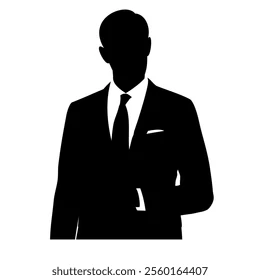

16 HOPE STREET NELSPRUIT 1200
SuitUp: Expansion & Recognition (2021–2023) By 2021, SuitUp had reached over 100,000 monthly visitors. Collaborations with stylists, career coaches, and even esports mentors broadened its appeal. For many, it became the go-to place for leveling up both appearance and performance. Notable milestones: 2021: Launch of “SuitUp Stories,” a section where readers shared personal transformations. 2022: SuitUp Academy debuted — a series of mini-courses on style, communication, and mindset. 2023: Recognition in several online publications as one of the “Top Emerging Lifestyle & Career Platforms.”